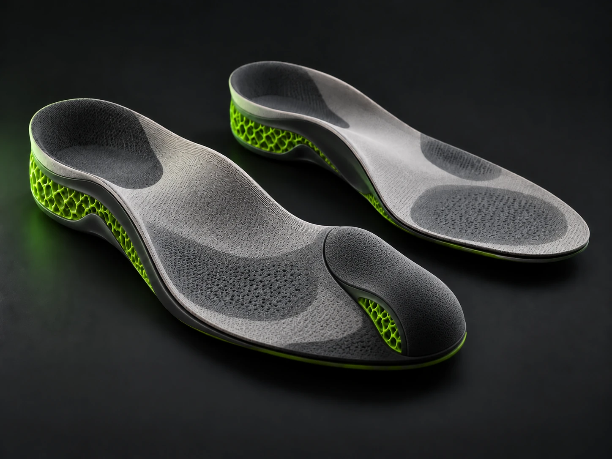
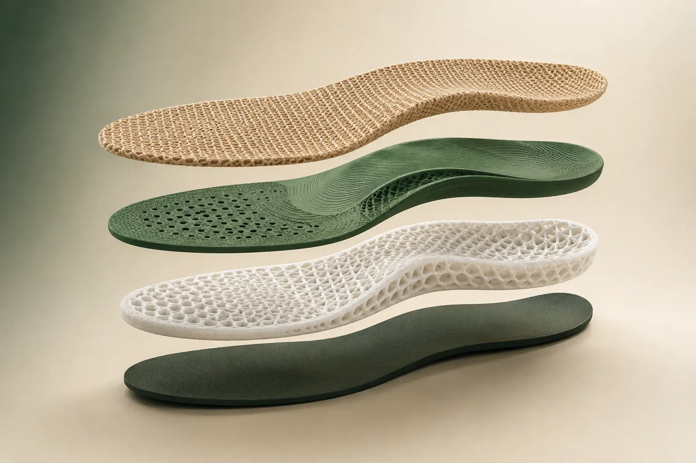
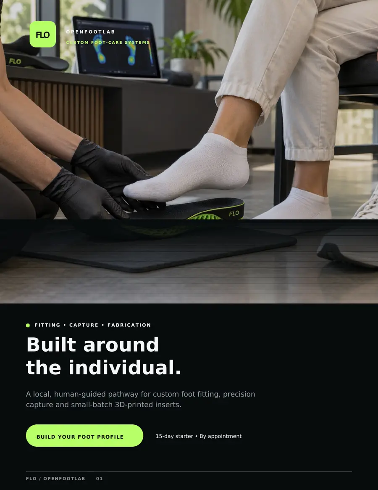

Technology stays behind the experience.
The client should never have to operate our AI, manage our infrastructure or understand our manufacturing stack.
FOOTLABOS / CONTINUITY BY DESIGN
Receive a trusted text or email. Tap the secure link. Take four guided photos. Done.
No app. No standing password. No special hardware for the client. FootLabOS handles the longitudinal record, local compute, monitoring workflow, manufacturing lineage and follow-through.
FLO received it. You're done for today.
OUR CORE PRINCIPLE
Advanced technology operating quietly in the background, so every person receives a simpler experience and a product designed around their real life.
The technology is our responsibility.
The healthy days are the client’s.
The client should never have to operate our AI, manage our infrastructure or understand our manufacturing stack.
A trusted message, a simple check-in, clear human communication and a product built for their actual needs.
Both feet, footwear, anatomy, activity, lived experience and change over time shape the product—not a generic catalog.
Technology organizes evidence and supports the work. Qualified humans review, decide, communicate and approve.
Client records live on infrastructure we operate. Information is used only to support the client and the service.
We continue listening, monitoring and learning after the product goes into service.
Every capture, review, design decision, adjustment and refresh must serve this purpose.
Technology handles complexity. People provide judgment and care. The client receives the result.
Technology is the crew.THE OPERATING LOOP
FootLabOS is designed around what happens between visits: wearing the device, watching both feet, collecting feedback, surfacing meaningful changes for human review and improving the system over time.
Both feet. Four-photo capture. Shoe context. Initial monitoring plan.
Geometry, shoe fit, materials, accommodation, manufacturing and version lineage.
The client wears the device. We keep listening, watching and improving.
Feet change. Shoes change. Loading changes. The next version learns from the last.
AFTER DELIVERY
Delivery does not close the case. Delivery starts the in-service relationship.
IN-SERVICE PROTOCOL
A new device deserves more attention than an established one. FootLabOS changes the cadence as the client moves from baseline through first wear and into established use.
Build the longitudinal starting point before design decisions depend on a stale snapshot.
Device, shoe, skin, comfort and client feedback are watched together as the insert enters real life.
Lower-friction continuity while preserving the ability to tighten cadence when something meaningfully changes.
New shoe. New device. Structural change. New pressure pattern. Significant change means the system deserves another look.
BILATERAL SYSTEM THINKING
One foot having the active problem does not make the opposite foot irrelevant. Both feet participate in the same standing, walking, footwear and load-transfer system.
Capture and monitor both feet.
Assess geometry and shoe fit bilaterally.
Inserts can be different while still functioning as one coordinated system.
Meaningful structural, shoe, device or loading changes trigger review and possible re-baseline.
THE APPLIANCE
FootLabOS delivers personalized bilateral inserts designed for real-world wear, monitored over time and improved through feedback, follow-through and refresh.
We do not think in terms of “just the bad foot.” We think in terms of a bilateral system: both feet, the shoes, the device, the client experience and what happens after delivery.

Personalized bilateral insert system / monitored over time
THE APPLIANCE
Personalized bilateral inserts built for real-world use, then monitored after delivery through FootLabOS.
We do not build around only “the bad foot.” We treat the right foot, left foot, footwear, loading, device and client experience as one connected system.

WHY THIS EXISTS
FOUNDER / LIVED EXPERIENCEFootLabOS did not start as a software exercise. It came from living through bilateral foot risk, repeated procedures, ulcers, amputations, changing structure and changing load — while seeing how much of the real work happens outside the exam room.
“The device cannot be the end of the conversation. The real work starts when the client goes home and wears it.”
The mission is not to replace the care team. It is to build the support system around the person: simple check-ins, longitudinal evidence, manufacturing, follow-through and a better feedback loop between visits.
WE OWN THE RACKS
The client's longitudinal FootLab record lives on provider-operated infrastructure. Outside communication services are replaceable pipes — not the system of record.
BLOCKZERO / PROVEN LOOP
The first complete FootLabOS capture has already moved through the local stack end to end: secure link, four originals, integrity hashes, trusted ingest, local Client Vault and Flight Sheet.
CLIENT VAULT
The moat is not a single printed insert. It is longitudinal evidence, device lineage, shoe history, adjustments and follow-through.
HUMAN IN THE LOOP
FootLabOS organizes evidence, supports monitoring, manufactures devices and surfaces meaningful changes for human review.
Diagnosis and treatment decisions belong to the licensed care team.
15-DAY FLO PROFILE BUILDER
Every foot is different. Before paid service begins, we build the timeline, identify the client’s actual needs and confirm what OpenFootLab can responsibly build and support.
We do not charge first and figure it out later. We build the baseline, close the loose ends and earn the relationship. When continued service makes sense and the client chooses it, FLO sends a secure Stripe payment link for that service period.
Start through OpenFootLabTHE CLIENT CONTRACT
The client should not need to understand our stack. They need a phone, a trusted message and about one minute.
No app because we want an app. No dashboard because we can build one. No extra forms because structured data is easier for us.
Never make the client do work because it makes our backend easier.
THE WHITEBOARD
This board grows as FootLabOS grows.
FLO FIELD NOTES / ABOUT YOU
Your feet. Your shoes. Your routine. Your questions. FLO Field Notes turns verified research and lived experience into short, useful reads built around you.
No noise. No technology lesson. Just intelligence you can use.One small habit can help you notice a loose object, folded liner or unexpected change before wearing the shoe.
Why delivery should start the feedback loop—not end the relationship.
The right foot, left foot, shoes and daily loading operate as one connected system.

FLO / OPENFOOTLAB CLINICAL BROCHURE
See how FootLabOS supports the complete OpenFootLab pathway: a 15-Day Foot Profile, precision capture, custom insert fitting, local fabrication and documented follow-through.
START WITH FLO
Tell us how to reach you and what brings you to FootLabOS. FLO will confirm your message, then a person from OpenFootLab will follow up directly.
FOOTLABOS